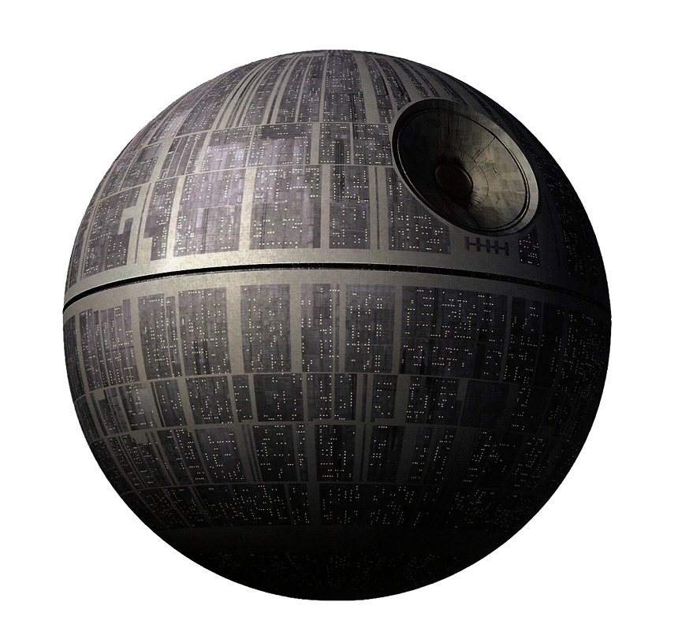

Ⅰ · Ⅱ · Ⅲ
Ⅰ · Ⅱ · ⅢTHE PREQUELS
The Fall of Anakin
A gifted Jedi's fear of losing the people he loves leads him down a tragic path toward becoming Darth Vader.
A GALAXY FAR, FAR AWAY
THE STORIES THAT CONNECT US
Star Wars has been part of my life since I was a kid. From playing the LEGO games to watching the Skywalker Saga, it’s a franchise that has always inspired me with its characters, stories, and the timeless battle between good and evil.
EXPLORE THE GALAXY
HOW IT ALL STARTED
A long time ago in a galaxy far, far away...
✦ ✦ ✦Star Wars has been a part of my life ever since I was a little kid. Some of my favorite memories are playing the LEGO Star Wars games and discovering the different adventures and characters throughout the franchise.
As I've gotten older, I've come to appreciate the stories on a deeper level. The Skywalker Saga is especially meaningful to me because characters like Anakin and Luke are complicated. Their decisions, struggles, and relationships make them feel human, even in a galaxy full of lightsabers and spaceships.
I know there are many people who love Star Wars as much as I do, if not more. I created this website to share what I enjoy about the franchise and celebrate the stories that bring fans together.
THE HEART OF THE STORY
The saga is about much more than the battle between Jedi and Sith. It is a story of family, fear, hope, and redemption.
Ⅰ · Ⅱ · ⅢTHE PREQUELS
A gifted Jedi's fear of losing the people he loves leads him down a tragic path toward becoming Darth Vader.
 Ⅳ · Ⅴ · Ⅵ
Ⅳ · Ⅴ · ⅥTHE ORIGINAL TRILOGY
Luke grows from a hopeful young farm boy into a Jedi who believes there is still good in his father.
 Ⅶ · Ⅷ · Ⅸ
Ⅶ · Ⅷ · ⅨTHE SEQUELS
A new generation faces the legacy of the Skywalkers while searching for identity, belonging, and hope.
WHERE MY FANDOM BEGAN
For me, playing Star Wars was one of the best ways to experience its universe.

CHILDHOOD FAVORITE
Playing the LEGO Star Wars games is one of my earliest memories of the franchise. I loved exploring familiar locations, playing as different characters, and experiencing the movies in a fun, creative way. Those games helped make Star Wars a big part of my childhood.
MORE THAN HEROES AND VILLAINS

ANAKIN SKYWALKER / DARTH VADER
Anakin is one of the most interesting characters to me. He wants to protect the people he loves, but his fear of losing them pushes him toward choices that ultimately destroy what he hoped to save.
Fear · Love · Tragedy
LUKE SKYWALKER
Luke faces darkness too, but he chooses compassion. His belief that his father can change is one of the most powerful parts of the story and shows that redemption is possible.
Hope · Family · RedemptionTHE FORCE CONNECTS US
Star Wars gives us exciting adventures, but its stories about family, choices, mistakes, and second chances are what make it unforgettable. Everyone has their own reason for loving this galaxy. This is mine.
Back to the Top ↑